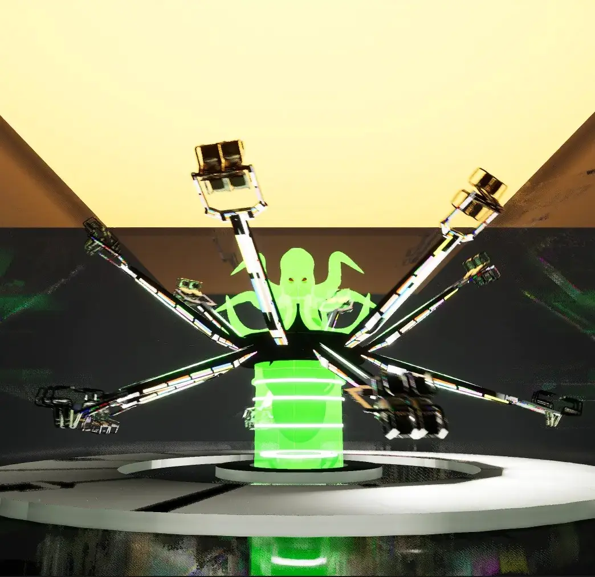

The Kraken
Deep Sea Terror Coaster
A conceptual ride exploring the darkest depths of the ocean. Features vertical drops into "abyssal" tunnels and bioluminescent thematic elements.

Deep Sea Terror Coaster
A conceptual ride exploring the darkest depths of the ocean. Features vertical drops into "abyssal" tunnels and bioluminescent thematic elements.